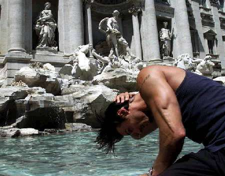
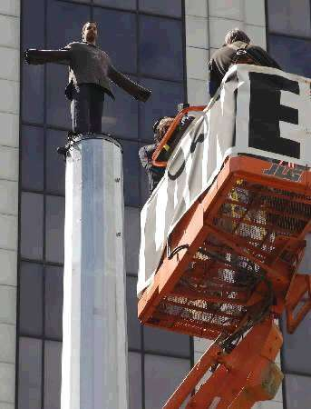
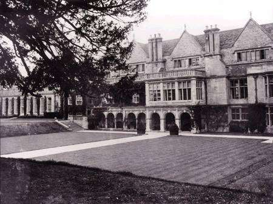
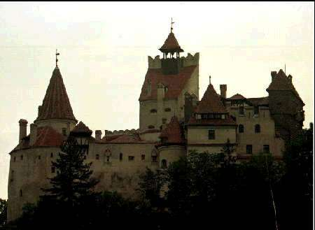
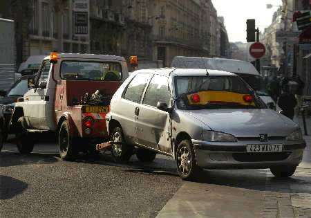
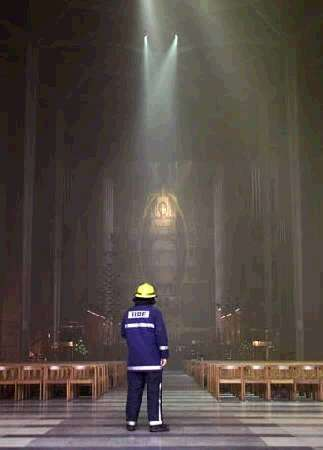
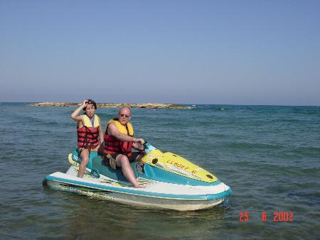
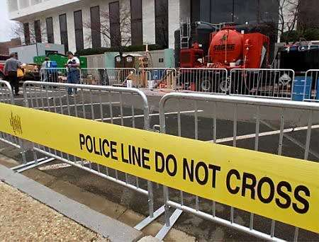
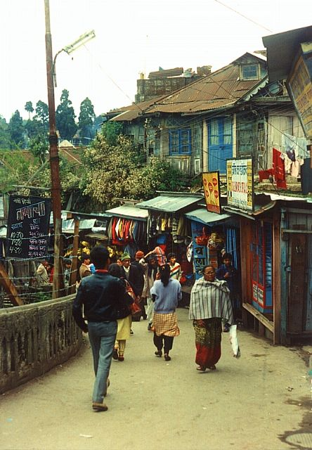

|
|
|
alt-usage-english.org |
| Home |
| Newsgroup |
| Intro Documents A B C D E F G |
| FAQ |
| FAQ Supplement |
| ASCII IPA |
| Audio Archive |
| Links |
| UCLE Corner |
| What's New? |
| Search |
| Site Map Where am I? |
| Contact |
|
|
|
IMPORTANT NOTICE: This site is scheduled for closure in September 2016.
If you have any comments about the closure, please post them to the newsgroup. See this page for information about the newsgroup and how to post to it. Question 0 |
Welcome to the Totally Gratuitous Question ZeroofThe 2002 Totally Official Summer Doldrums Competition
To get things underway, here are 26 clues...
a. a colossus was once here Please note that each clue is given a letter. So far, so good, right? Next, here are 11 pictures...          
Now for the puzzle: if 15 of the 26 clues are eliminated, the remaining 11 will match the pictures, *and* be in the correct order. http://www.totally-official.com/??????????? If you have solved this, don't forget to get back to the newsgroup to help your fellow aue civilians learn the correct url! Additional notes by the alt.usage.english webmasterThe correct answer is: http://www.totally-official.com/bdhjlnoqtvy That URL led to a page something like this:
Note that you won't be able to see the puzzle if your browser doesn't execute JavaScript. The answer to the puzzle is archived here. |
|||||||
|